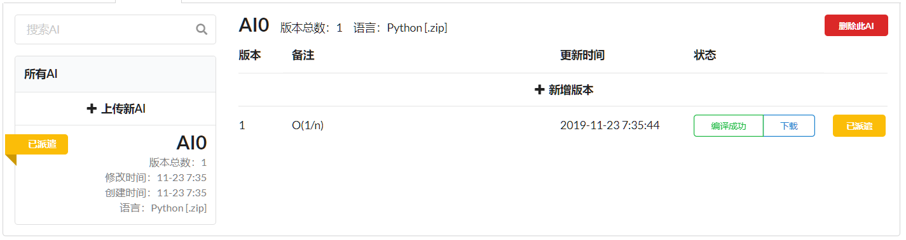
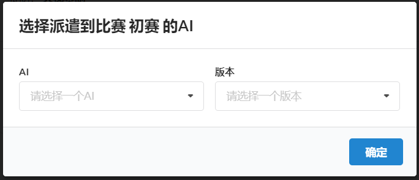

网站前端-部件
aiList.vue
| 参数 | 值 |
|---|---|
| 用途 | 管理提交的代码 |
| 预览 |  |
| 传入参数 | 解释 |
|---|---|
| gameId | 代码管理的是所有与gameId有关的AI |
| allowRemote | 是否允许远端算力 |
| 属性 | 解释 |
|---|---|
| language | 所有支持的语言，用于实现下拉菜单 |
| entity_info | 在选中某个entity之后，右侧部分显示的内容数据来源于entity_info |
| entities | 该用户所有的代码分支，在mounted中获取 |
| new_entity_modal | 点击创建新分支时会弹出表格弹窗，表格弹窗的数据绑定到这里 |
| new_version_modal | 点击在某分支中创建新版本时会弹出表格弹窗，数据绑定到这里 |
| compile_message_modal | 点击编译后的代码（编译成功/编译失败）弹出弹窗显示编译信息，弹窗数据绑定到这里 |
| active | 派遣的AI，在mounted中获取 |
| entity_search_text | 搜索AI的搜索栏关键字绑定到这里 |
| 函数 | 参数 | 返回值 | 解释 |
|---|---|---|---|
| init_websocket | null | null | yyt |
| websocket_on_message | event | null | yyt |
| send_current_state | null | null | yyt |
| show_compile_message | 编译信息与编译状态 | null | 弹出显示编译信息的弹窗 |
| select | 选中的分支的编号 | null | 根据分支编号向服务器请求详细信息，并绑定到entity_info上显示 |
| change_new_file/change_new_version_file | null | null | 判断更换代码文件后文件大小是否不为0 |
| requireFile | 分支，版本 | 判定结果 | 在分支不使用远程算力且未指定代码文件时需要文件 |
| isRegularWS | yyt | ||
| requireWSAddr | |||
| requireFOW | |||
| entityRequire | |||
| codeRequire | |||
| submit_new_entity_and_version | null | null | 点击上传新AI时会首先执行创建一个新的分支，成功后执行创建一个新的代码版本，创建代码版本时需要对提交的表格进行验证 |
| submit_new_version | null | null | 在已经创建好的代码分支上创建一个新的代码版本 |
| delete_current_entity | null | null | 点击删除此AI时调用，删除当前的代码分支 |
| send | 代码分支，版本号，派遣/取消派遣，代码版本对象 | null | 改变派遣的版本 |
| download_code | 代码版本的下载链接 | null | 根据服务器给的链接下载代码文件 |
| getLanguage | 代码分支 | null | 根据代码分支中语言的键返回编程语言的字符表示 |
codeSelector.vue
| 参数 | 值 |
|---|---|
| 用途 | 管理提交的代码 |
| 预览 |  |
| 传入参数 | 解释 |
|---|---|
| username | 代码管理的是所有与gameId有关的AI |
| gameId | 是否允许远端算力 |
| originEntity | |
| originEntities | |
| header | |
| callback |
| 属性 | 解释 |
|---|---|
| initted | |
| open | |
| entities | |
| entity | |
| entity_options | |
| code | |
| code_options | |
| 函数 | 参数 | 返回值 | 解释 |
|---|---|---|---|
| getEntity | yyt | ||
| getCode | yyt | ||
| selectCode | yyt |